Organized and led by high-school students, Noble Youth Society is a non-profit organization based in Metro Vancouver, Canada.
Current leadership
13 team members
01Co-Presidents
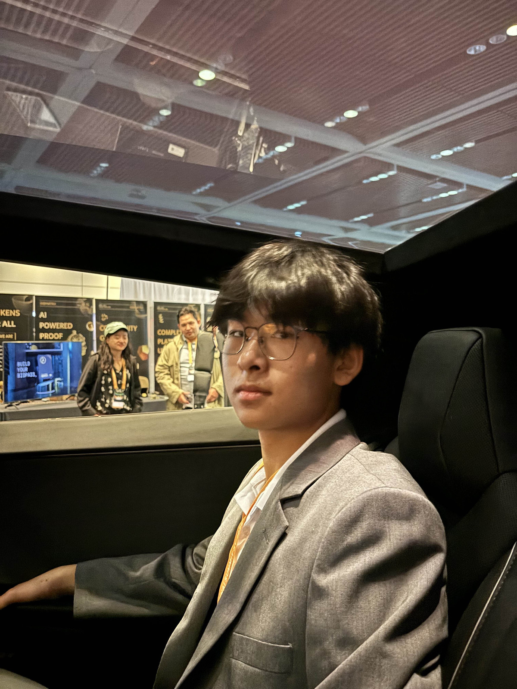
Co-Presidents
Micah Hou
I am Micah Hou, a grade 12 member of NYS. Serving as the President of EPS's 3D Printing Club and as one of the designers in revamping EPS's website, I aim to provide technical support to NYS in our events as well as maintaining and improving NYS's website and other technical infrastructure. This year as IT Director my goal is to migrate our website onto cloud hosting services under our own domain. It's going to be a exciting year, stay tuned!
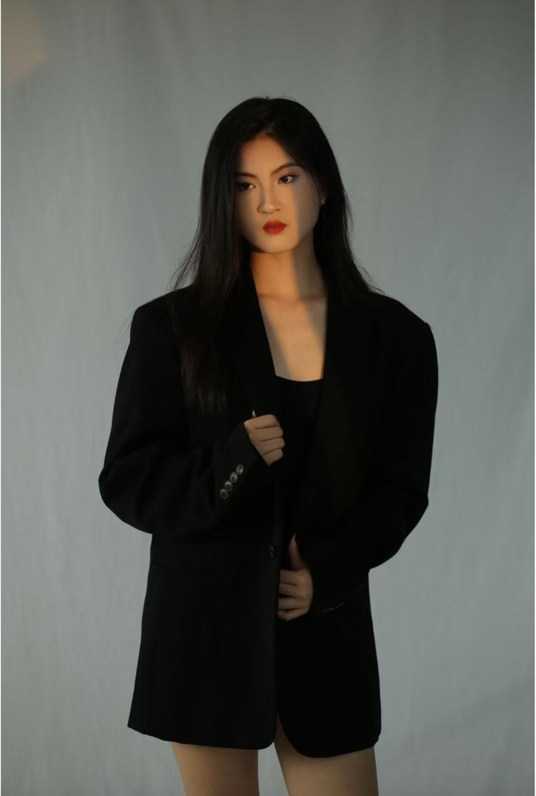
Co-Presidents
Sophie Liu
Hi, my name is Sophie Liu and I am a grade 12 IB student at Semiahmoo Secondary. I am honoured to take on the role of VP for public relations for NYS this year. As someone who loves turning ideas into action, I am extremely excited to coordinate projects that can make genuine impact across our community. Outside of school, I enjoy Latin dancing and reading, as well as spending time with my sister.
02Vice Presidents
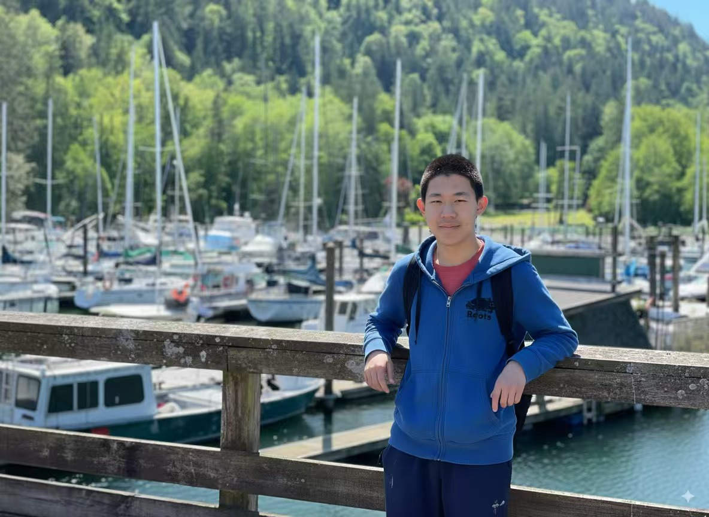
Vice President of Technology (VP Tech)/Treasurer
Jimin Pei
Hi, I’m Jimin Pei, a Grade 11 student at Elgin Park Secondary. I enjoy playing tennis, musical instruments, and collecting various items. I’ve been part of NYS for over two years and currently serve as Treasurer. I hope to use my time and skills to support NYS and help make it an even better organization behind the scenes. Looking forward to seeing you all this year!
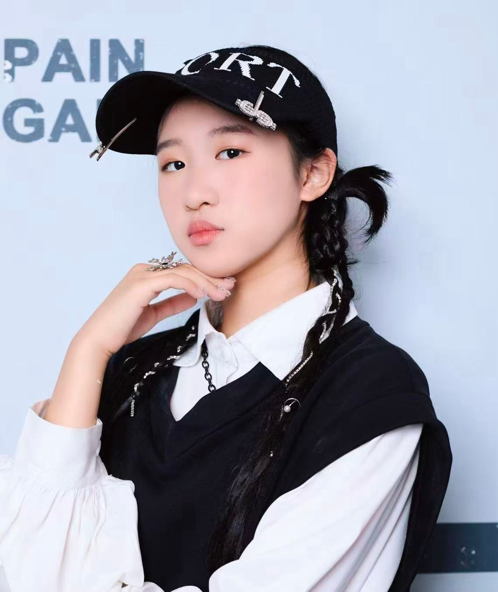
VP of Marketing/Public Relations Officer
Yuki Shi
I'm Yuki Shi, a grade 10 student from GHS.I have been a member of NYS since 2023. I enjoy dancing and playing the piano. I will utilize my abilities and tap into my potential, hoping to grow together with NYS and form a bigger family.
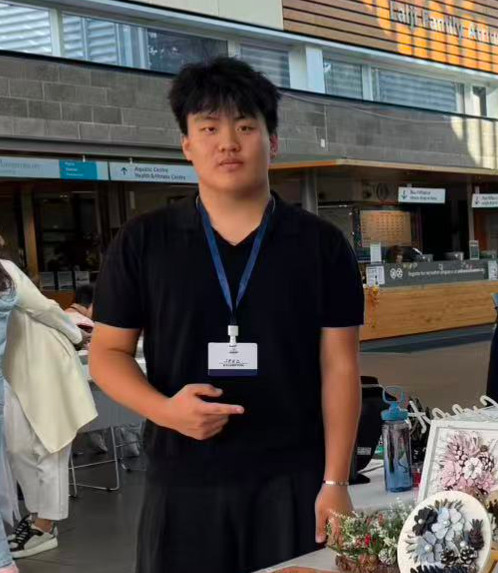
VP of Marketing
Mark Hou
Motivated and community-oriented Grade 12 student seeking the Marketing Executive position at NYS. Having participated in numerous Eco Fabrica events, I have seen firsthand the positive impact the organization has on our community. My goal is to help expand NYS's reach by promoting its initiatives, attracting more volunteers, and increasing community engagement through creative marketing and outreach.
03Directors
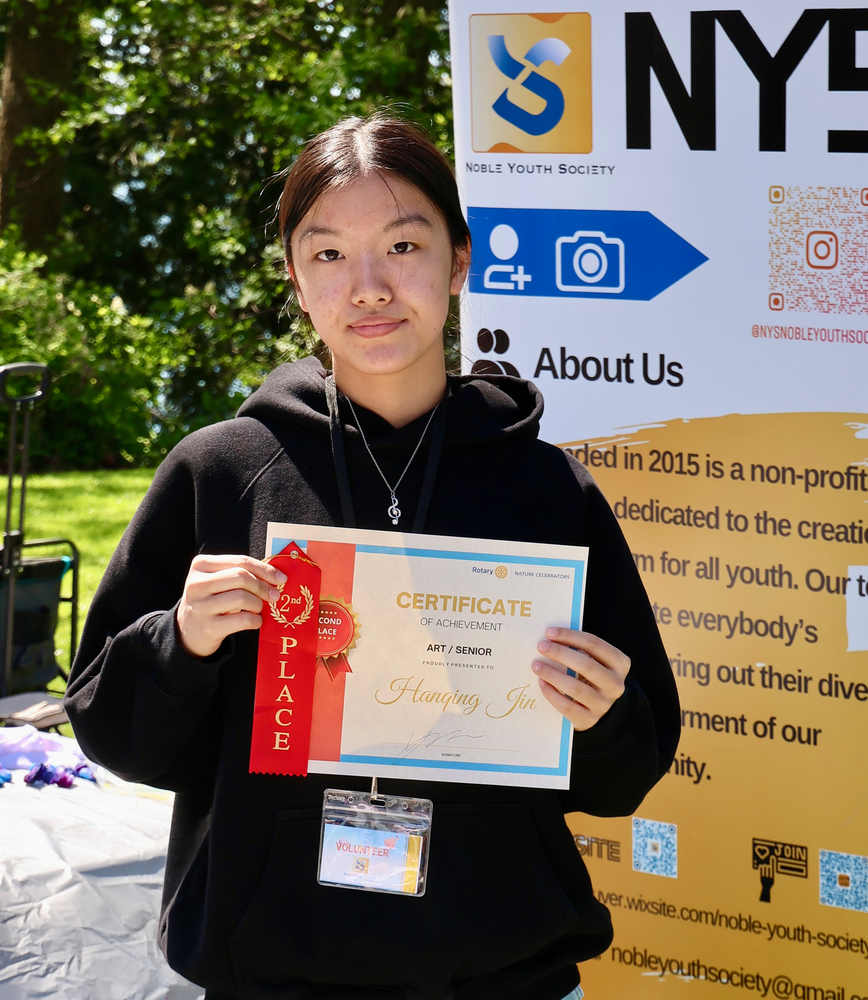
Media Director
Hanqing Jin
I’m Hanqing, and I am currently a grade 11 student at Grandview Heights Secondary. I have been a member of NYS since 2021, and I’m passionate about creativity and sharing the work we do here. I enjoy dancing and playing the piano, and I’m always open to learning and trying new ideas. My goal is to help make our events stand out through clear and engaging content now that I have been selected for the Media Officer role. I am excited to build onto my goals and support my members throughout this new journey.
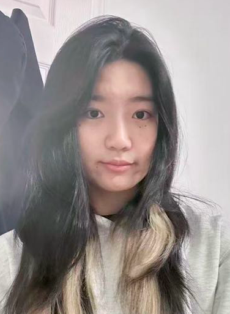
Admin Director
Zoe Shao
Im Zoe shao, currently i am a grade 10 student at GHS. I have a passion for volleyball, skiing and all kinds of sports. Also animals like dogs and cats. I serve for logistics officer assistant for NYS. I have been a member of NYS since 2025. I aim to volunteer more, become closer with NYS and enhance my skills in helping with things that i can help with. My goal is “ become more positive, believe in myself and do everything as perfect as i can. ”
04Officers & Assistants
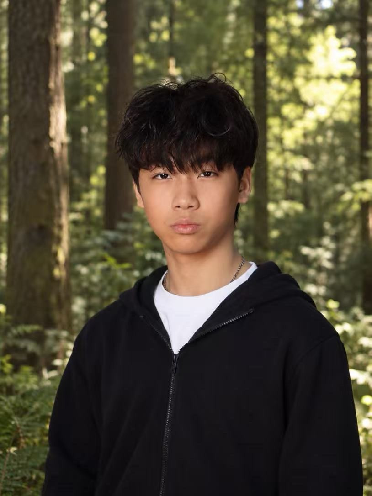
Media Officers / Assistants
Kevin Kang
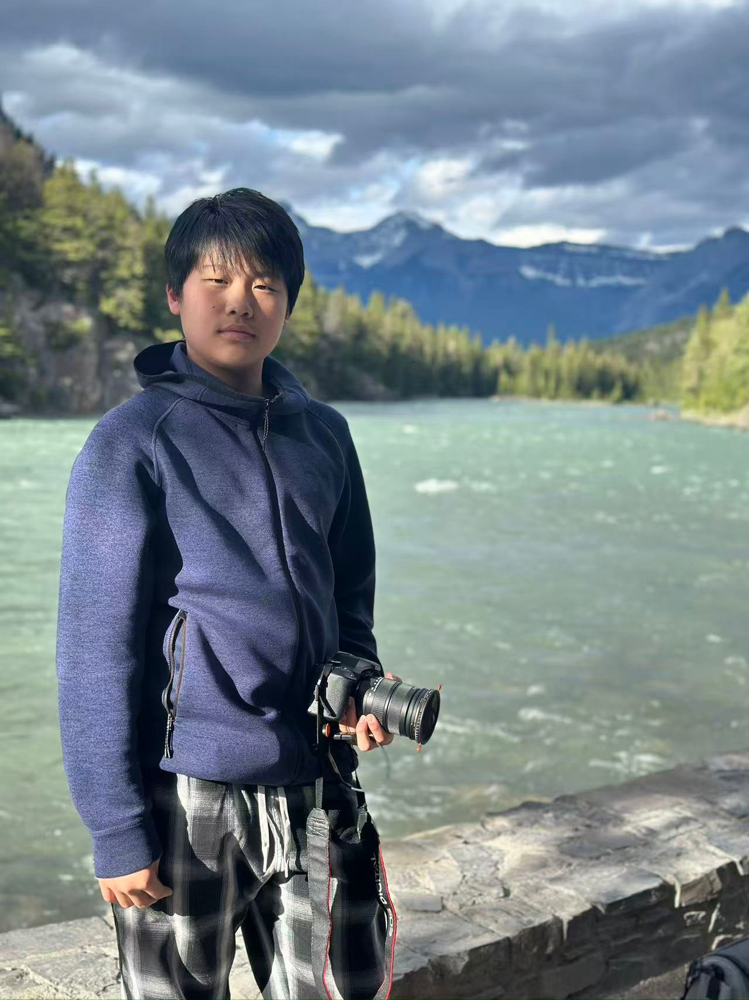
Media Officers / Assistants
Henry Shen
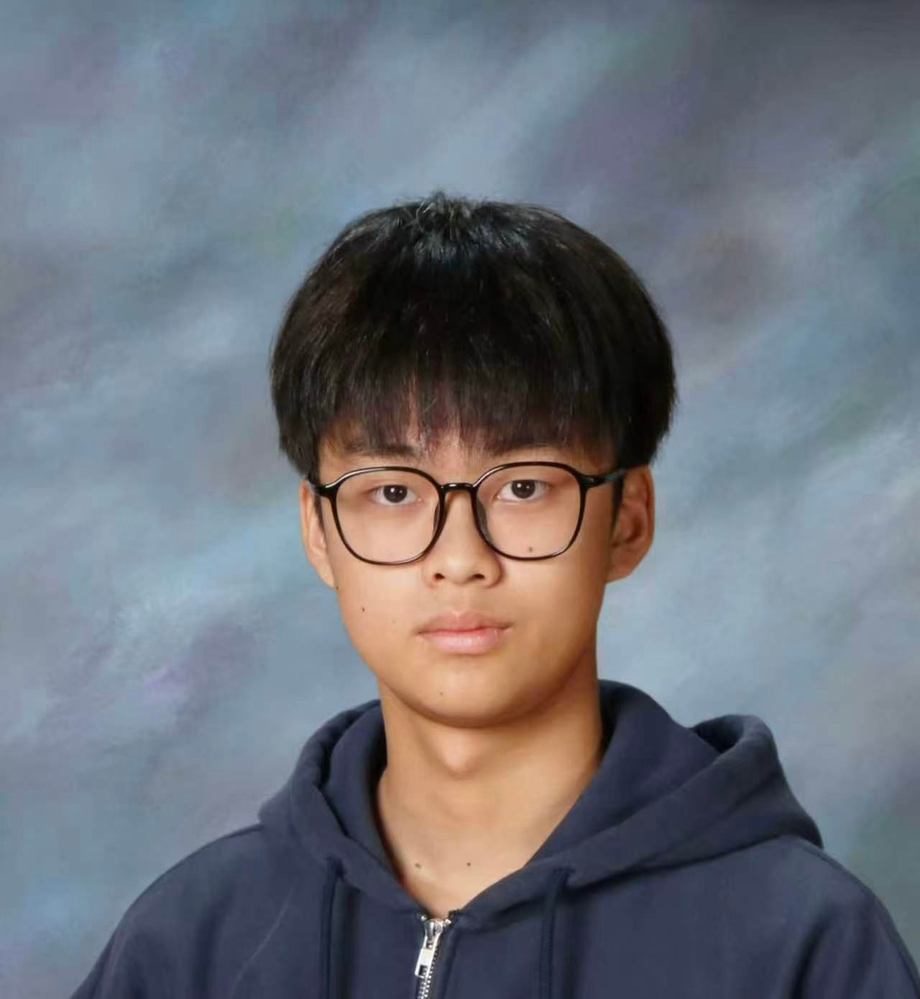
Media Officers / Assistants
Thomas Shen
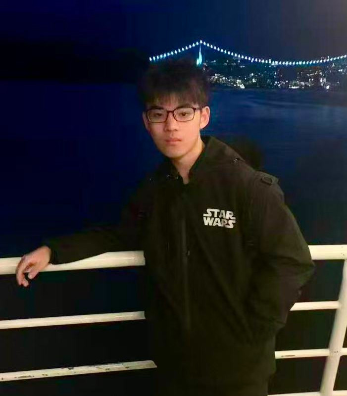
Technology Officer
Jeffery Kong
My name is Jeffrey Kong. I’m currently grade 12 at Earl Marriott Secondary and I’ve been a member since 2026. I enjoy art, playing instruments, and skiing. In addition, I serve as the Technical officer of NYS. I aim to provide technical assistance and maintenance for NYS. Thank you.
Media Officers / Assistants
Edwin Ma
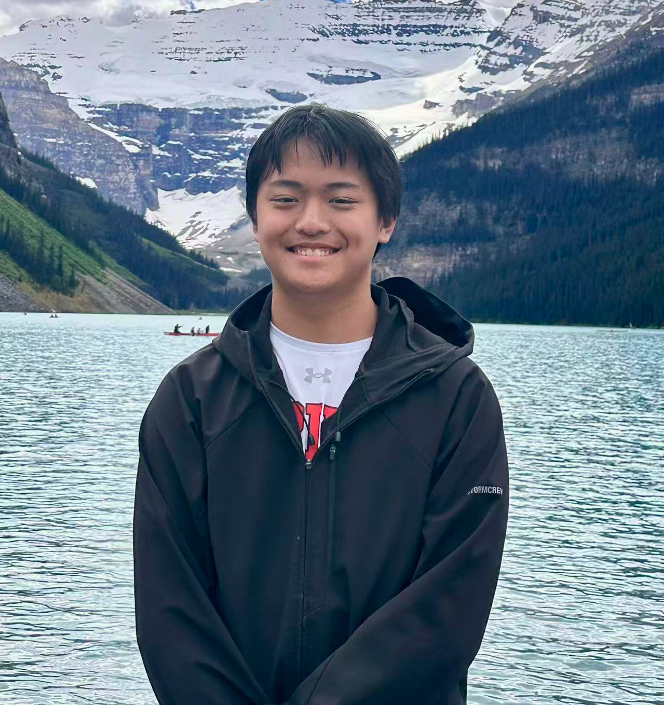
Admin Assistant/Treasurer
Andy Shen
My name is Andy Shen I am a grade 11 student in Semiamoo Secondary.I hope to use my skill to help NYS to become greater.
Past leadership
3 team members
2025
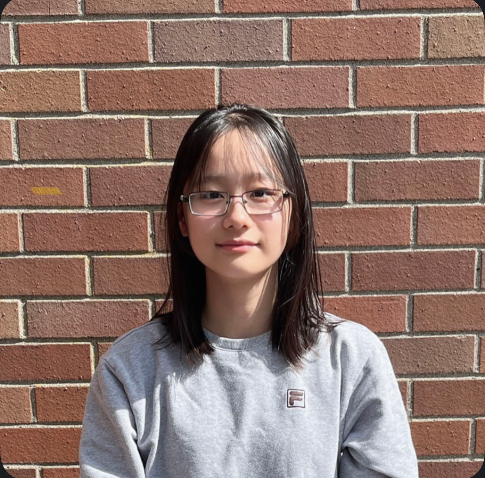
Past Co-president (2025)
Amy Deng
I'm Amy Deng, currently a grade 12 student. I have a passion for drawing and playing piano, and I also serve as one of the directors of NYS. I aim to leverage my energy and skills to enhance NYS as an organization. My motto is to "Embrace challenges, pursue excellence."
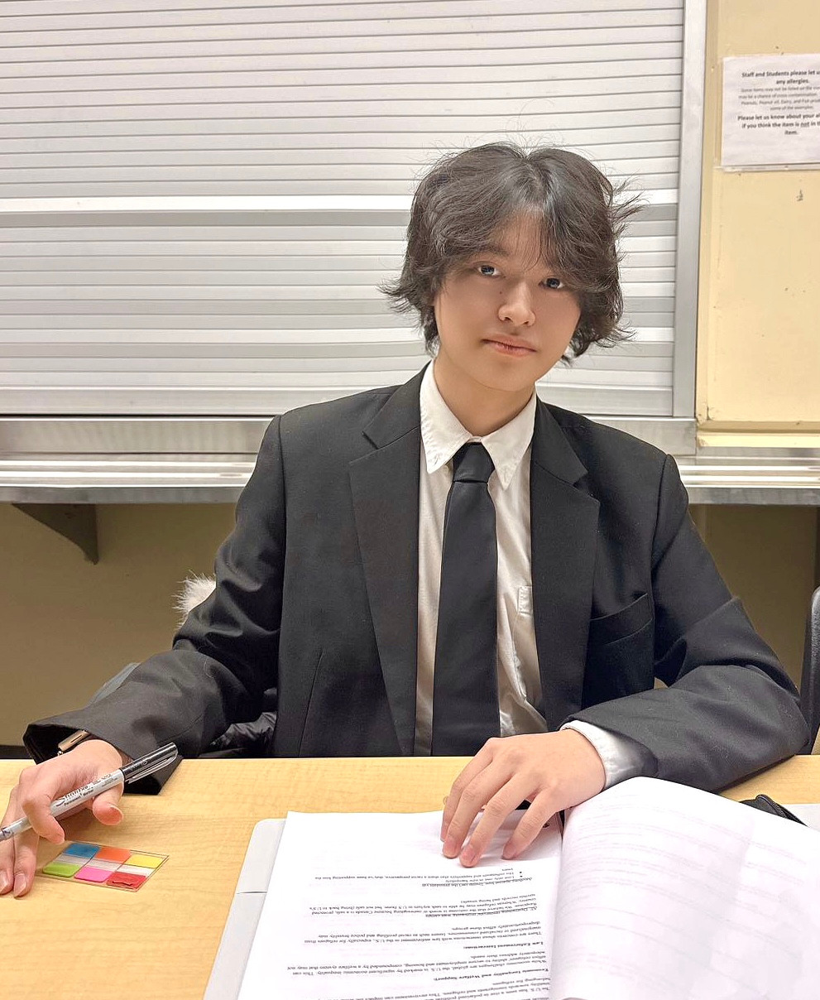
Past Co-president (2025)
James Yin
Hi, my name is James. I currently attend grade 12, and I have been a member of NYS since 2022. As the Vice President, I hope to bring out everybody's diverse talents and utilize them for the betterment of our collective community. Some of my interests include business, finance, and music. I look forward to working with you all!
2024
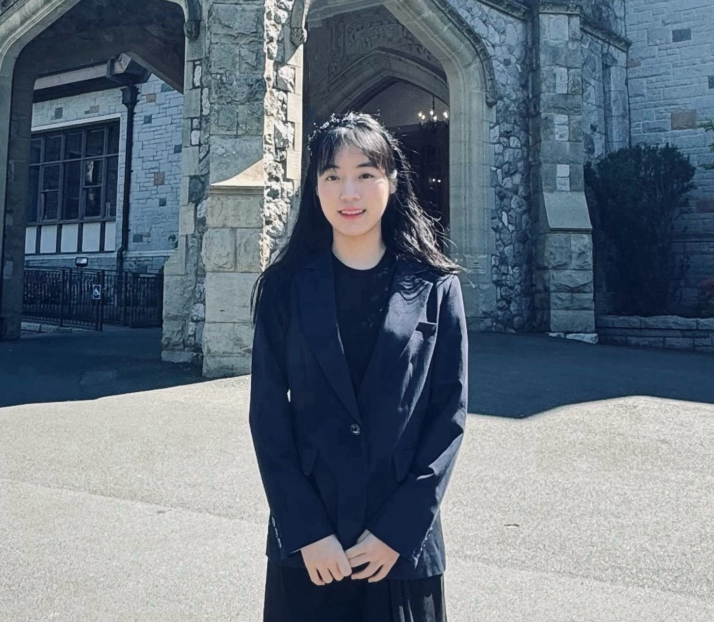
Past President (2024)
Solenn Sun
I’m Solenn Sun, a grade 12 student from Semiahmoo Secondary School in Surrey. I have been a member of the NYS Club since 2022 and currently hold the honor of being its president. I am committed to utilizing my talents and leadership skills to organize more activities, offering volunteering opportunities for teenagers to contribute to their communities. Everywhere I go, I always carry with me a quote: "It's nice to be important, but it's more important to be nice." My goal is to embody this sentiment in the NYS club, exploring the uniqueness and generosity among every club member.